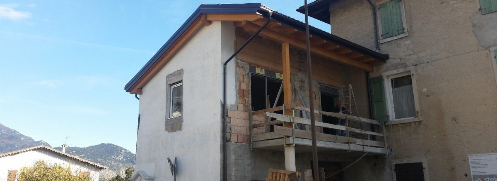
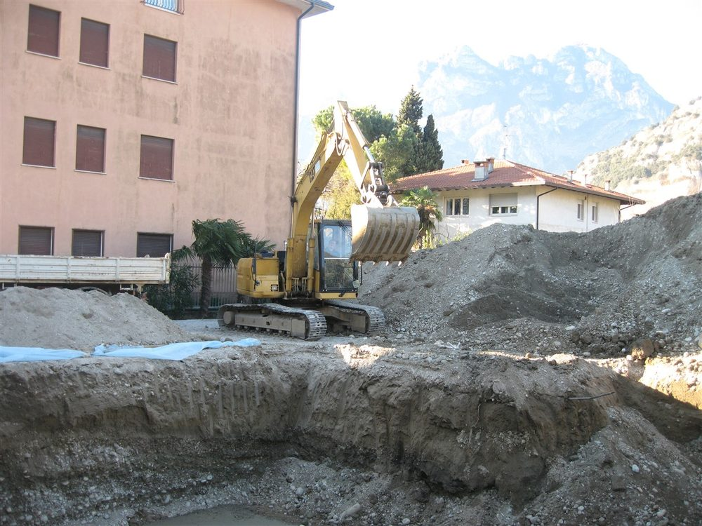
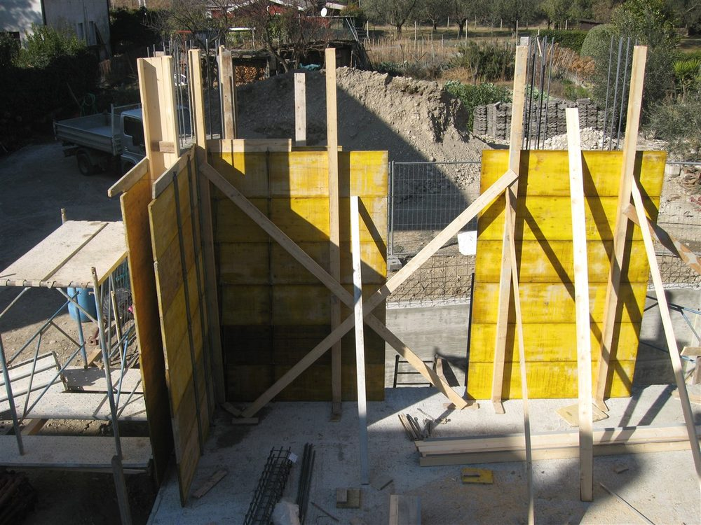
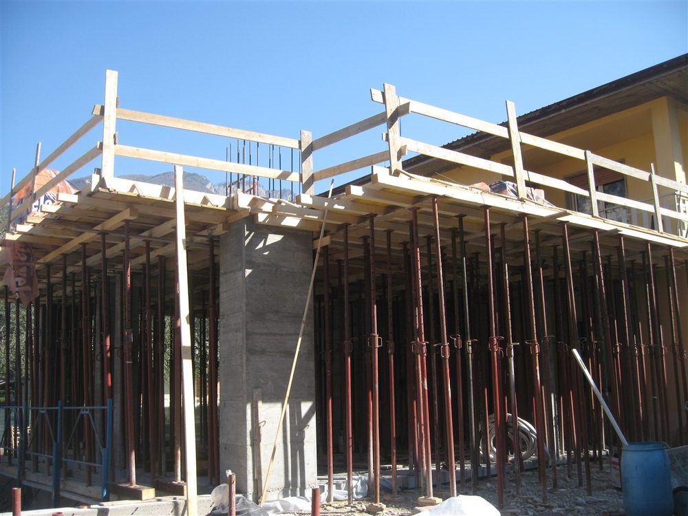
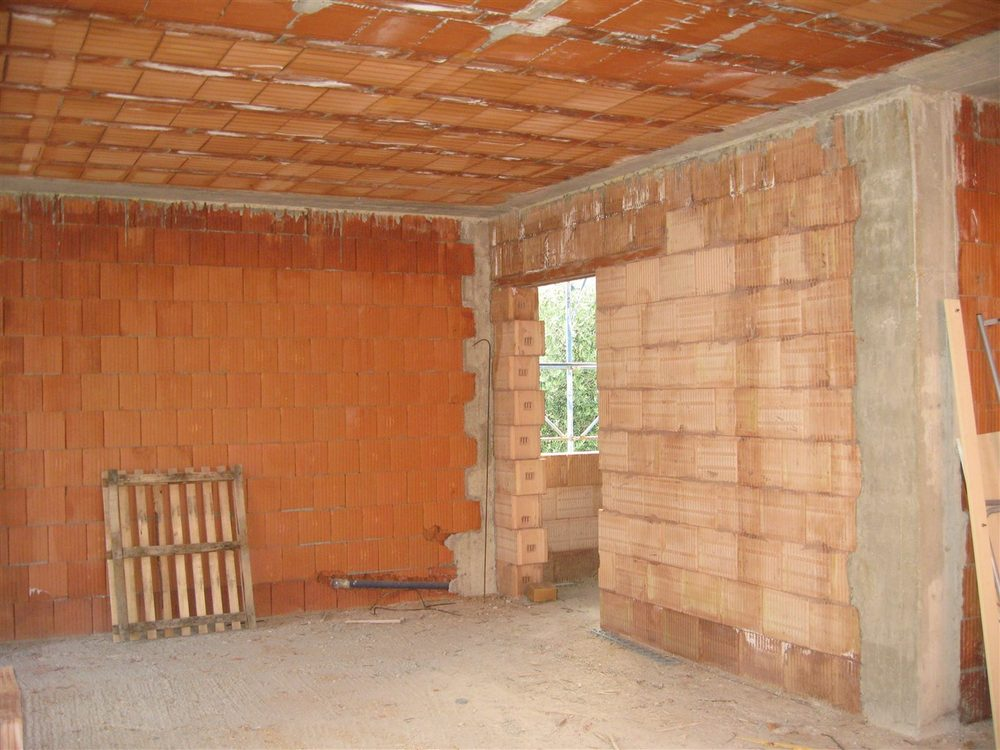

Costruttorida sempre
Case nuove, ristrutturazioni e lavori chiavi in mano sul Lago di Garda: da Torbole a Riva, Arco, Nago, Dro, fino a Trento. Con costi certi, garantiti da contratto.
Cosa facciamo
Costruiamo case nuove e ristrutturiamo, restauriamo e rinnoviamo abitazioni, sia su nostra iniziativa sia con appalti di privati ed enti pubblici. Se puoi pensarlo, possiamo farlo.

Costruzioni e ristrutturazioni
- Costruzioni edili complete
- Ristrutturazione di edifici residenziali e commerciali
- Ristrutturazioni anche di piccola entità
- Bagni rifatti completi, anche sanitari e idraulica se richiesti

Pavimentazioni da esterni
Viali, cortili e passeggiate: affidatevi alla nostra esperienza e chiedeteci un preventivo.

Caldane, tetti e piscine
- Caldane e alleggerito per aziende e abitazioni
- Tetti e isolazioni
- Scavi e strutture per piscine
- Solette, carotaggi e piccoli lavori di muratura
Chiavi in mano
Costi certi, garantiti da contratto, e tempi definiti da un'attenta valutazione del lavoro.
- ProgettazioneProgettiamo insieme a voi, prima di aprire il cantiere.
- Costruzione e ristrutturazioneCi occupiamo noi di tutto il lavoro, dallo scavo alle finiture.
- ControlloSeguiamo da vicino ogni fase del lavoro.
Il cantiere, passo dopo passo
Alcuni dei nostri lavori, dallo scavo ai muri. Scorrete col dito.





Dove lavoriamo
La sede è a Torbole, sul Lago di Garda. Costruiamo e ristrutturiamo abitazioni nelle zone di:
- Torbole
- Nago
- Riva del Garda
- Arco
- Dro
- fino a Trento
La sede
Via Strada Granda 89
38069 Nago-Torbole (TN)
Chiedeteci un preventivo gratuito
Per una casa nuova, una ristrutturazione o una consulenza specifica: contattateci senza problemi.